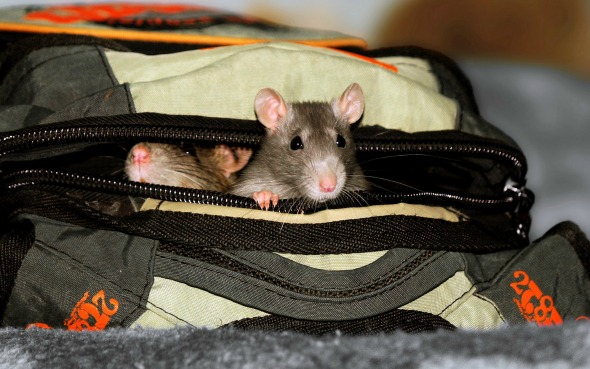
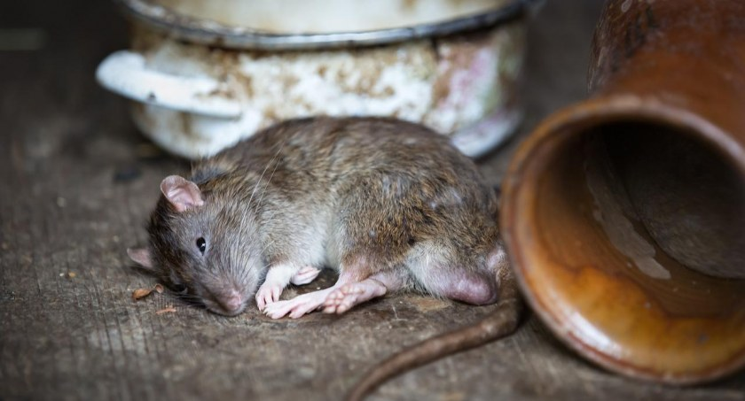
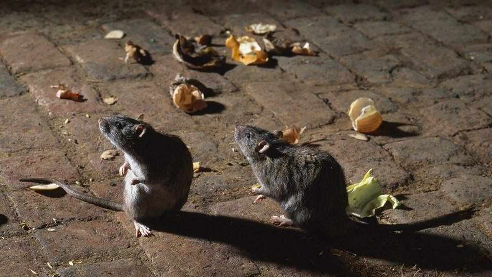

Na stronę główną
Na stronę główną
Z czego wynika ich obecny wizerunek i jakim zmianom ulegał przez wieki?
Szczury przenoszą choroby i stanowią zapalniki epidemii
Przez wiele lat były obwiniane za wybuch pierwszej epidemii dżumy w XIV wieku. Jak już zostało wspomniane, po latach doczekały się rehabilitacji – badania naukowców z Uniwersytetu w Oslo dowodzą, że większą odpowiedzialność za transport zarazków „czarnej śmierci” ponosiły wszy i pchły kąsające ludzi, a nie te pasożytujące na szczurach. Prawdą jest natomiast to, że szczury mogą przenosić wszy, pchły, kleszcze i wiele innych pasożytów.
Szczury należą do najbrudniejszych zwierząt świata
Szczury wcale nie są na bakier z higieną. A na pewno nie bardziej niż inne zwierzęta, w tym te całkowicie udomowione jak psy lub koty. Szczury pielęgnują swoje ciała nawet kilka razy dziennie. W dużej mierze postrzeganie ich jako „brudasów” wiąże się z niegrzeszącymi czystością miejscami, w których bywają (np. śmietniki) niejako z konieczności (muszą w końcu coś jeść).
Szczury zjedzą wszystko
Szczury nie jedzą wszystkiego, co napotkają na swojej drodze. W rzeczywistości, jak większość zwierząt, mają swoje preferencje żywieniowe. Są nawet całkiem wybredne. Przystępując do konsumpcji, oddzielają od reszty te części posiłku, których nie lubią. Mogą cierpieć nawet na cukrzyce lub otyłość. Na wolności preferują zboża, nasiona, orzechy, owoce i warzywa, ale także nie pogardzą mniejszymi zwierzętami oraz owadami.
Szczury są niebezpieczne i agresywne
Nie musimy wpadać od razu w panikę gdy napotkamy na drodze szczura. Szczury nie są z natury agresywne i nie zaczną atakować, jeśli nie mają ku temu powodu. Jak każde zwierzę będzie się broniło, jeżeli poczuje zagrożenie i zostaną sprowokowane.


